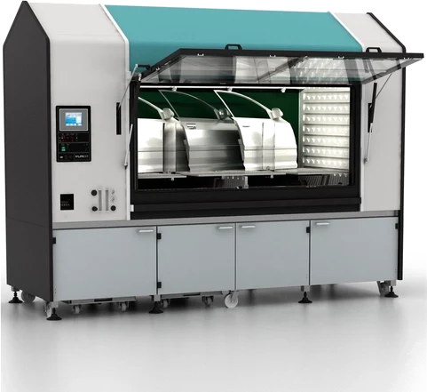

Climatic and corrosion test chambers
VLM ClimaCORR Chambers
With ClimaCORR® (CC) technology, VLM has become the undisputed technology leader in its industry segment. The essence of the ClimaCORR® approach is the convergence of climatic test chambers on the one hand and corrosion test chambers on the other. As a result, the “CC” product range features an extended temperature range, extremely fast and precise temperature and humidity control, and an unprecedented temperature and humidity control range:
- Wide operating temperature range from ambient to +80 °C
- Controlled humidity from ambient to 98% RH
- Patented controlled water condensation system (CVC)
- Patent pending for fast and accurate humidity control
- Temperature control accuracy up to ±0.5 °C
- Relative humidity control accuracy up to ±1%
- Fast heat exchange thanks to flat Micanite heaters and the steel construction of the test chamber
- Modular design and user-friendly control interface
Optional: fully automatic gas dosing (Kesternich test).